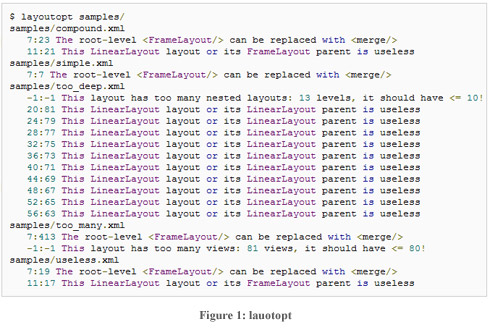
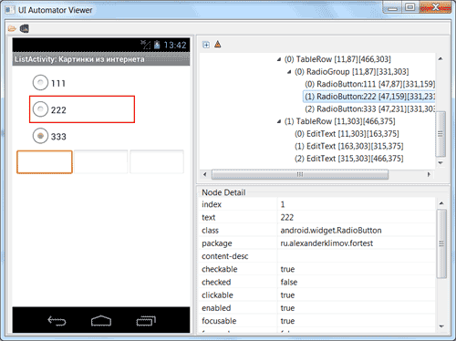

/* Моя кошка замечательно разбирается в программировании. Стоит мне объяснить проблему ей - и все становится ясно. */
John Robbins, Debugging Applications, Microsoft Press, 2000

/* Моя кошка замечательно разбирается в программировании. Стоит мне объяснить проблему ей - и все становится ясно. */
John Robbins, Debugging Applications, Microsoft Press, 2000
DDMS
AAPT
ADB
Draw 9-patch
Hierarchy Viewer
Lint
SQLite3
TraceView
MkSDCard
Dx
activityCreator
layoutOpt
uiautomatorviewer
uiautomator
Средства разработки от производителей
Android Development Tools - плагин для Eclipse IDE, позволяющий создавать приложения под Android с комфортом.
Главная страница плагина, на которой можно узнать все последние новости об изменениях, новых версиях и т.п. Также есть отдельный сайт http://tools.android.com/, где можно узнать о бета-версиях (для продвинутых).
Android SDK содержит множество инструментов и утилит для создания и тестирования приложений. Большинство из них доступно прямо внутри среды разработки Eclipse из панели DDMS.
Менеджеры виртуальных устройств - инструменты для создания и управления виртуальными устройствами в Android (AVD) и управления ими в виде отдельных экземпляров эмулятора. AVD содержит эмулятор, внутри которого работает соответствующая версия Android. C его помощью можно указать версию SDK, разрешение экрана, емкость SD-карты, аппаратные возможности (сенсорный экран, GPS).
Каждое виртуальное устройство должно иметь название, целевую сборку Android, емкость SD-карты и разрешение экрана. Кроме того, виртуальные устройства поддерживают разные аппаратные настройки и ограничения:
Для управления версиями SDK можно использовать менеджер SDK через панель, доступную в меню Window → Android SDK and AVD Manager. Вы можете просматривать установленные версии SDK, а также обновлять их по мере надобности. При выборе пункта Availiable Packages вы можете проверять репозиторий на наличие доступных, но еще не не установленных пакетов и архивов. Пометьте флажком необходимые файлы для загрузки и скачайте нужные пакеты.
Виртуальная машина Android для тестирования и отладки ваших приложений прямо на компьютере, не имея реального устройства. Является реализацией виртуальной машины Dalvik, что делает его совместимым с любым Android-телефоном. Чтобы запустить эмулятор, сначала необходимо создать виртуальное устройство (см. выше).
С помощью эмулятора вы можете иметь полноценный доступ к интернету, настраивать скорость и латентность соединения. Также можно имитировать входящие и исходящие телефонные звонки и SMS-сообщения.
В то же время эмулятор не поддерживает виброзвонок, светодиоды, камеру, акселерометр, соединений по USB, захват аудиоданных, уровень заряда батареи.
Дополнение ADT интегрирует эмулятор в Eclipse, поэтому при запуске и отладке проектов он автоматически стартует внутри выбранного экземпляра AVD. Продвинутые программисты могут запускать эмулятор через telnet, минуя Eclipse.
Используйте панель DDMS (Служба для отслеживания процесса отладки в Dalvik) для отслеживания и контроля за виртуальными машинами Dalvik. Это мощный отладочный инструмент, позволяющий изучать активные процессы, просматривать стек и кучу, мониторить и останавливать рабочие потоки, исследовать файловую систему подключенного устройства.
Возможности
При использовании ADT утилита DDMS интегрируется в Eclipse и доступна из соответствующей панели (Window→Open Perspective→DDMS). В противном случае вы можете запускать DDMS из командной строки - ее исполняемый файл находится в папке Android SDK /tools.
На панели Devices перспективы DDMS можно увидеть список эмуляторов и телефонов, подключенных в текущий момент. Можно выбрать отдельные экземпляры, просмотреть текущие процессы и потоки. Чтобы просмотреть поток, щелкните мышью по нужному процессу устройства, затем на кнопке обновления потока.
Для просмотра файлов и папок в эмуляторе или на устройстве вы можете использовать панель File Explorer. Вы можете копировать файлы между системой Android и вашим компьютером с помощью кнопок перемещения. Также можно удалять файлы. При этом на экран не выводится сообщение о подверждении операции и отмены операции, поэтому будьте осторожны.
Панель Emulator Control позволяет выполнять голосовые вызовы, отправку и прием SMS, запрос геолокационных координат.
Входящие голосовых вызовов являются имитацией. Это не настоящий звонок, никакие данные не передаются.
AAPT (Инструмент для создания пакетов) создает файлы пакетов для Android (.apk), готовые к распространению.
Клиент-серверное приложение, которое предоставляет доступ к работающему эмулятору или устройству. С его помощью можно копировать файлы, устанавливать скомпилированные программные пакеты и запускать консольные команды. Используя консоль, вы можете изменять настройки журнала и взаимодействовать с базами данных SQLite, которые хранятся на устройстве. В старых версиях SDK программа находилась в папке /tools. Теперь находится в папке /platform-tools. Подробнее о ADB...
Утилита Draw 9-patch находится в папке /tools (файл draw9patch.bat).
Утилита работает с png-файлами и сохраняет в формате .9.png
В папке tools есть файл hierarchyviewer.bat, который запускает программу для отладки и оптимизации пользовательского интерфейса.
Программа отображает иерархию видов в форме древовидной структуры. Вы загружаете шаблон и проверяете на возможнжные недоработки или возможность оптимизации, сведя к минимуму количество содержащихся в нём видов.
Наверняка, в процессе разработки вы уже видели подсказки от утилиты Lint, которая встроена в Eclipse (ищите значок с галочкой на панели инструментов). Также её можно запустить отдельно через командную строку при помощи файла lint.bat. Утилита позволяет генерировать HTML-отчёт.
Некоторые возможности Lint:
Иногда, сообщения об ошибках от Lint, мешают создать файл apk. Чтобы отключить Lint, откройте Window | Preferences. Выберите Android | Lint Error Checking и уберите флажок у элемента Run full error check when exporting app and abort if errors are found.
Утилита позволяет получить доступ к файлам базы данных SQLite, которые используются в Android.
Инструмент для графического анализа. С его помощью можно просматривать трассировочные записи, принадлежащие вашему приложению.
Утилита командной строки создает образ диска для SD-карты (FAT32). Может использоваться эмулятором для имитации флеш-накопителя.
После создания образа карточки ее нужно указать в настройках эмулятора, чтобы у вас была возможность работать с ней.
mksdcard -l <label> <size> <file>
mksdcard -l mySdCard 1024M mySdCardFile.img
В настройках эмулятора подключение к карточке происходит следующим образом
emulator -sdcard <file>
Преобразует байт-код из формата Java (.class) в формат Android (.dex).
Сценарий, создающий сборочные файлы для утилиты Ant, которые можно применять для компилирования приложений без участия ADT.
Инструмент, анализирующий ваши ресурсы с разметкой и предлагающий различные улучшения и оптимизации.
Вызывается командой:
<AndroidSDK\tools>layoutopt [directories|files]
Получите следующую картинку:

Программа покажете бесполезные (useless) разметки и даст советы по замене на другие варианты.
Новая утилита, которая появилась совсем недавно (Android 4.2 SDK). Находится в папке <android-sdk>/tools. Утилита сканирует и анализирует GUI-компоненты вашего приложения.

Ещё одно средство тестирования
Страница документации - uiautomator | Android Developers
Пример работы - UI Testing
Статья в блоге с описанием и комментариями - SoftTeco Blog: Google UIAutomator убил все наши наработки за почти 3 года, но ему это можно простить!
Еще - Everybody Tests: UiAutomator and Watchers: Adding Async Robustness to UI Automation
Производители устройств предлагают собственные наработки для работы с телефонами и планшетами. Вы можете использовать какие-то приёмы для конкретной марки телефона
Компания HTC представляет свой центр для разработчиков - HTCDev, на котором можно найти информацию о загрузчиках, примеры, OpenSense SDK.
Компания LG подготовила для разработчиков свой сайт - LG Mobile Developer Network
Не отстаёт и Samsung, который имеет свой центр для разработчиков - Samsung Developers
Sony также завела себе сайт для разработчиков - Developer World